Revving up: The dynamics of bacterial flagellar stators
Navish Wadhwa
Arizona State University
@WadhwaLab
How does a cell interact with its environment?


My lab uses bacteria as a model for mechanobiology
The bacterium E. coli as a model organism

Inhabits guts of mammals
Some strains are harmful, most harmless
Multiple flagella per cell
Bacteria are the smallest self-propelled swimmers

Many bacteria swim by rotating helical flagella
 Slowed down 20X
Slowed down 20X
Overview of the bacterial flagellar motor
Mechano-adaptation in the motor
A surprise in bacterial surface motility (unpublished)
Artwork: Dan Nowakowski/Nicholas Taylor
Overview of the motor
A nanoscale motor powers
swimming in bacteria
 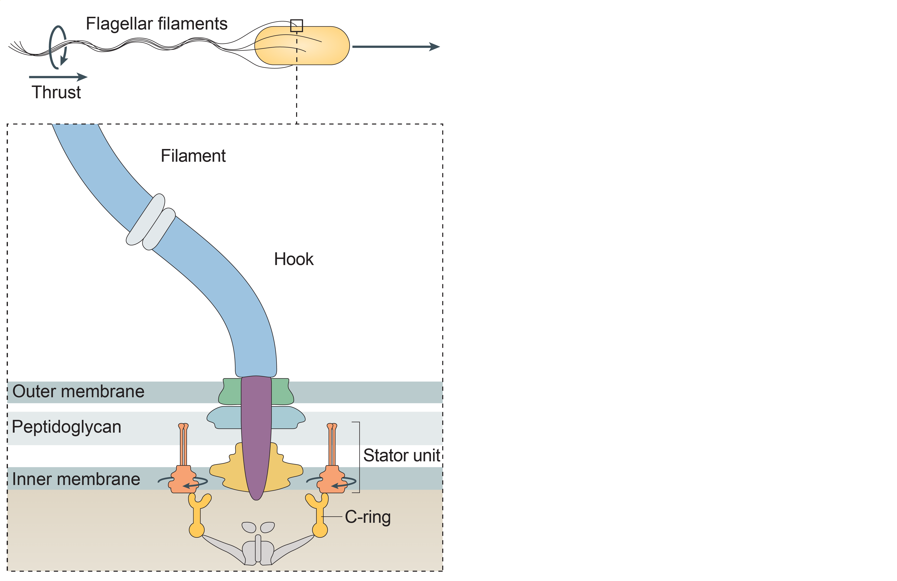
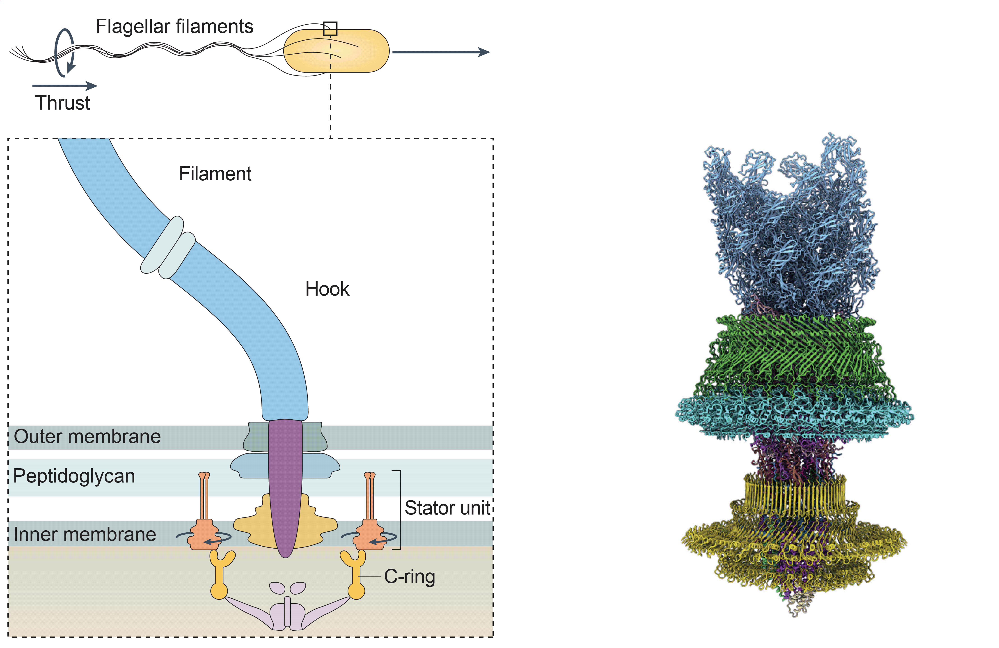
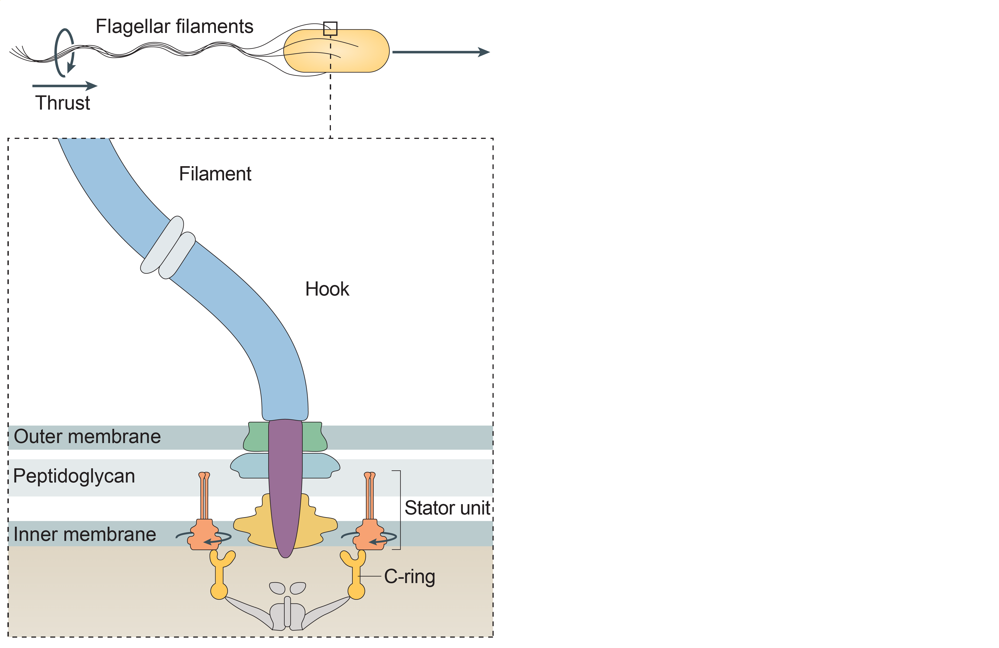
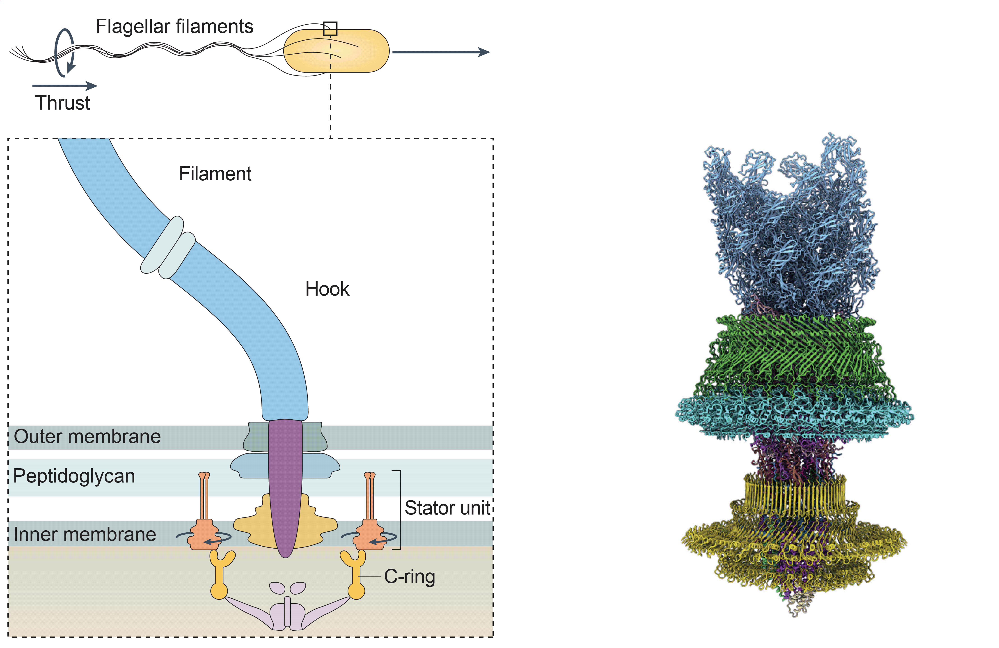

N. Wadhwa and H. C. Berg, Nature Rev Microbiol 2021; J. Tan et al., Cell 2021
Stator is a 5:2 protein complex
Rotation within the stator complex powers motor rotation

How does the flagellar motor cope with changes in mechanical load?

Howard C. Berg
Harvard

Rob Phillips
Caltech

Yuhai Tu
IBM

Shabduli Sawant
ASU

Banu Ozkan
ASU
Automatic gearshift in cars allows the engine to adapt to changing terrains


Automatic gearshift in E. coli allows the motor to adapt to changing loads


What is the physical and molecular mechanism underlying this automatic gearshift?
How can we change motor load?


Instantaneously
Reversibly
Controllably
Electrorotation allows
full control over motor load


Instantaneous
Reversible
Controllable
Electrorotation allows
full control over motor load

A change in load triggers stepwise changes in motor speed


The motor adapts to changes
in load by remodeling its stator

Wadhwa et al., PNAS 2019
Wadhwa et al., PNAS 2021
Wadhwa*, Sassi* et al., Nat Comm 2022
Remodeling kinetics depend on electrorotation speed


Higher electrorotation speed leads to lower torque

Hypothesis
Stator remodeling depends on torque
A quantitative model for stator assembly


We extracted the on rate ($k_+$) and the off rate ($k_-$) from the data
The off-rate decreases with torque


Free energy of the bound state decreases with torque
 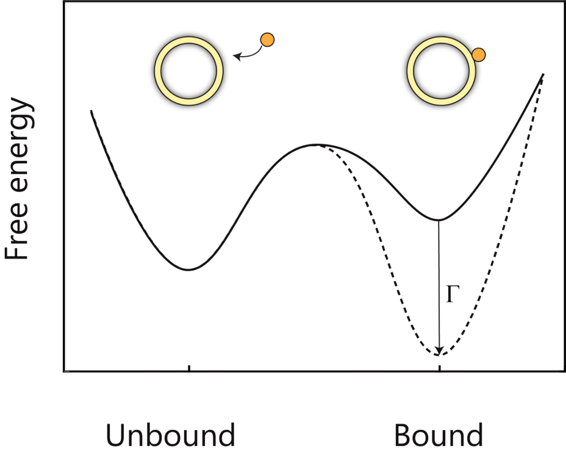
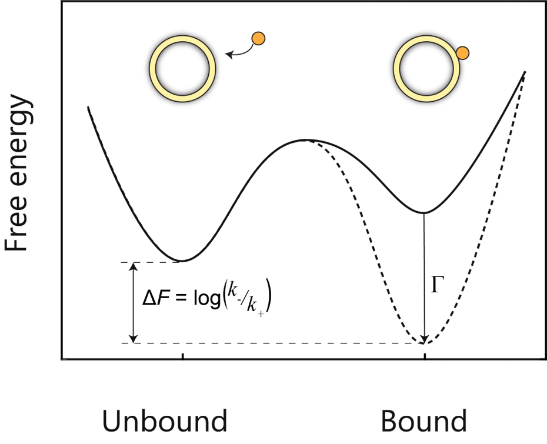
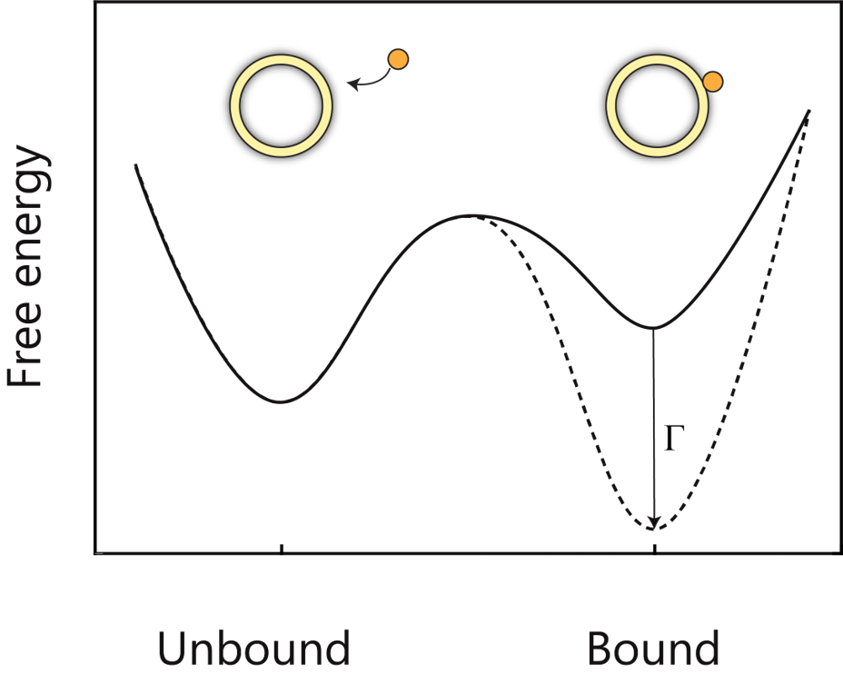
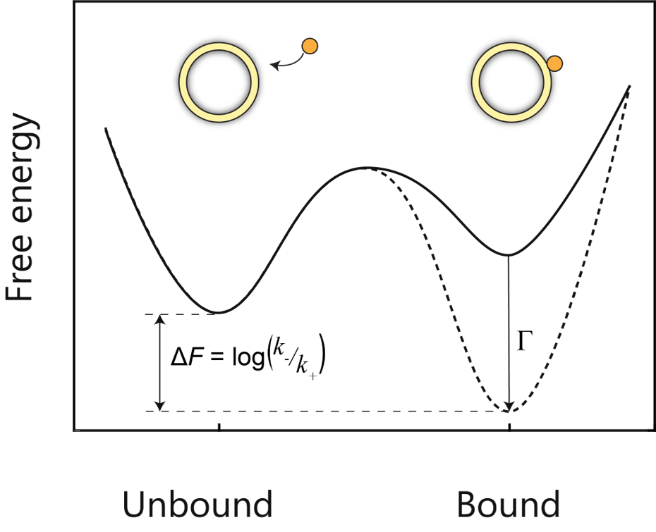

The off-rate decreases exponentially with torque

Torque anisotropy allows us to test the model

Collapse of CCW and CW data validates the model


Molecular mechanism for torque-dependent unbinding rate

Low torque

High torque
Structure of the MotB periplasmic domain
Front view
Top view
Computational probing of the structure (w/ Banu Ozkan)
Dynamic Flexibility Index
Dynamic Coupling Index
I186 is strongly coupled with L247 in the binding pocket
Mutations in I186 affect swimming
 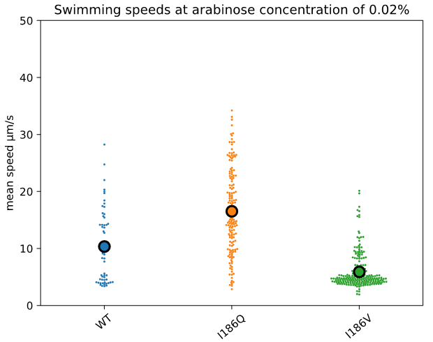
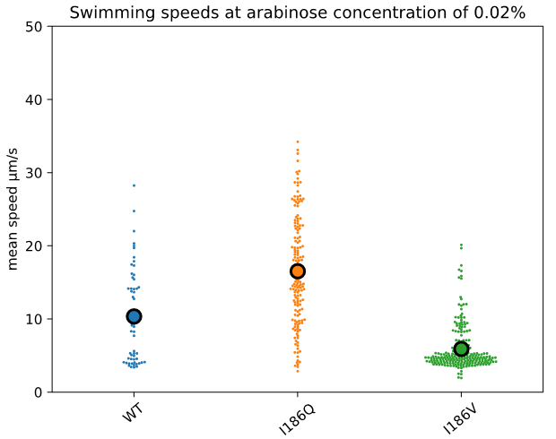
A surprise hidden in bacterial surface motility
Eric Dudebout
ASU
Justin Panich
Utah

David Blair
Utah
Bacteria spread over surfaces using a variety of mechanisms
Twitching

Gliding
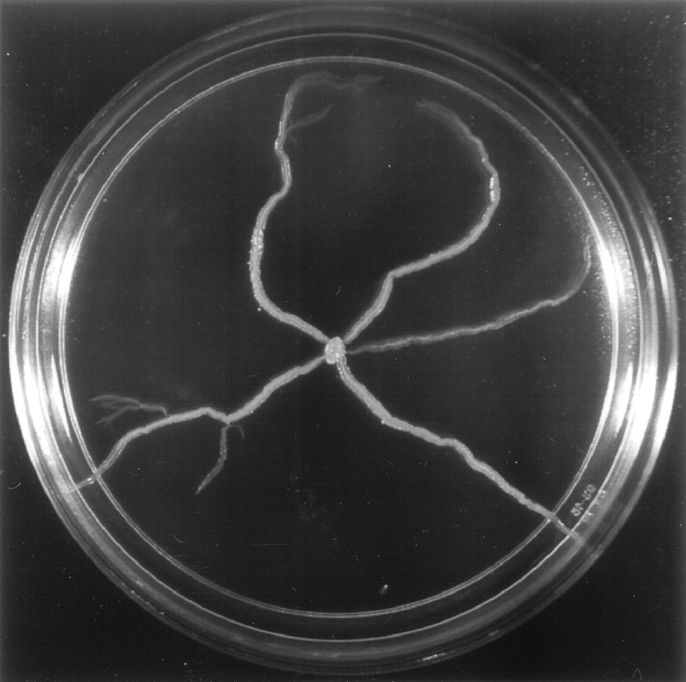
Sliding

Swarming
Swarming in Salmonella and E. coli is poorly understood

Requires soft agar (Eiken for E. coli)
Glucose required at 0.5%
Role of flagellar propulsion has been unclear
Surface migration without flagellar propulsion in Salmonella
 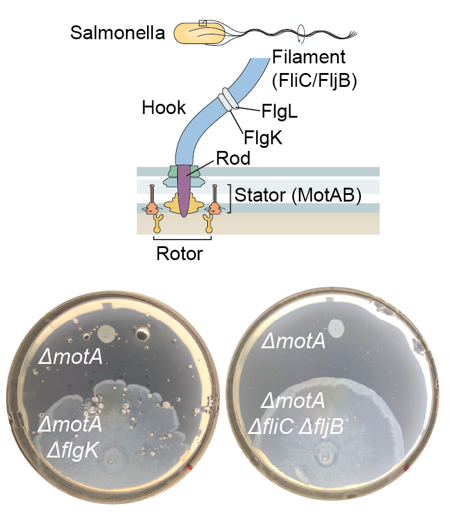
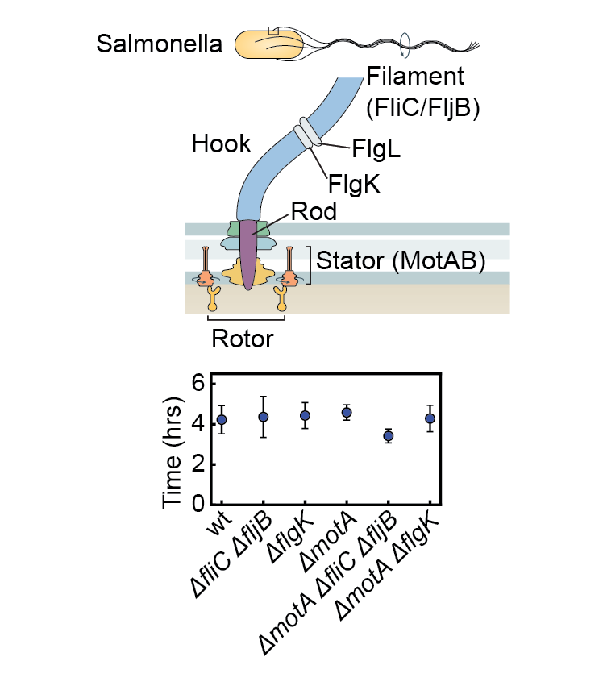
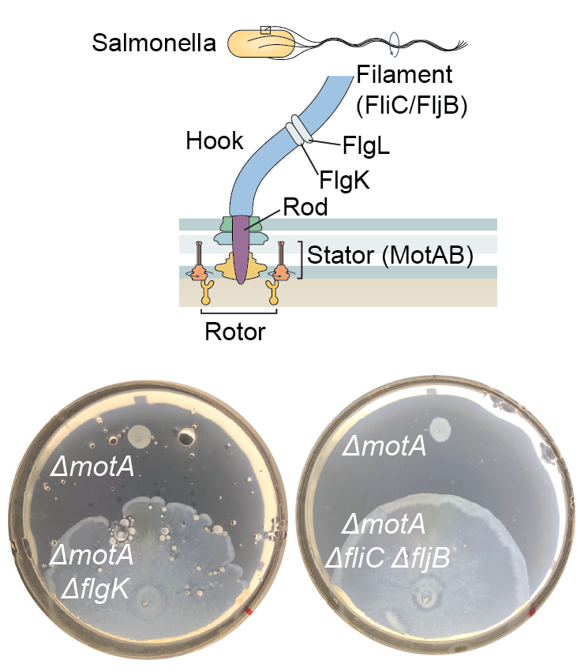
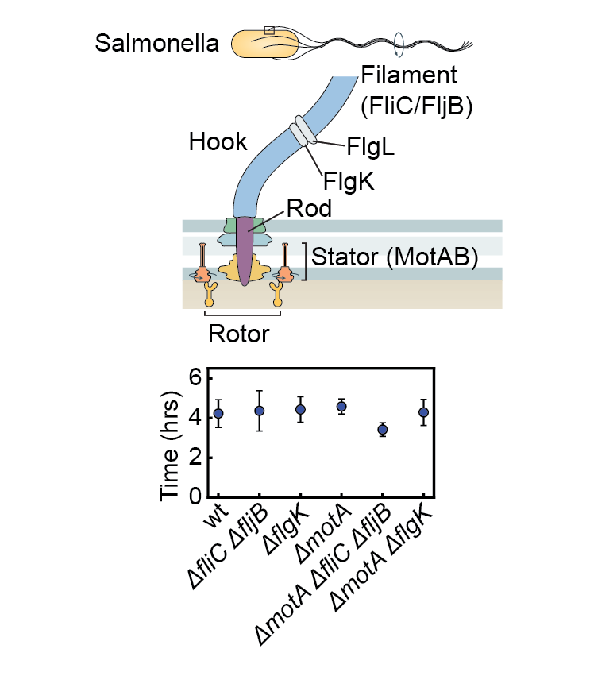
Unpublished results
Surface migration without flagellar propulsion in E. coli

Unpublished results
Surface migration without flagellar propulsion in E. coli

E. coli ΔflgK; Unpublished results
Surfactant enhances swarming but inhibits surfing
Surfing is associated with fermentation
A model for bacterial surfing
 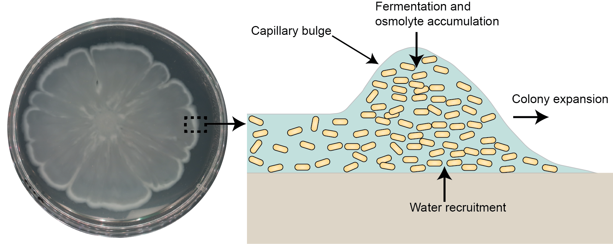
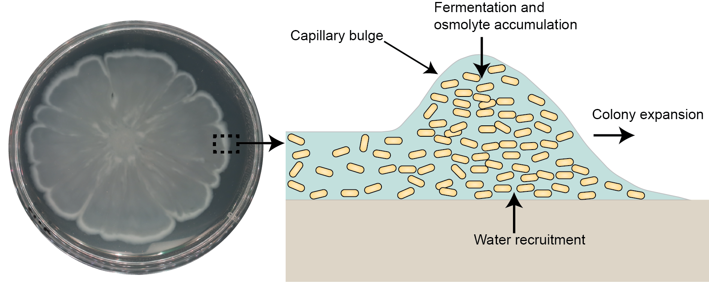
Unpublished results
Take home messages
The flagellar motor dynamically remodels to adapt to external load.
Fermentation drives propulsion-independent surface motiltiy.
Contributions
Used electrorotation to control motor load
Measured remodeing in single flagellar motors
Modeled population-averaged kinetics of motor remodeling
Introduced Surfing motility in E. coli and Salmonella
Panich*, Dudebout* et al., in prep
Acknowledgements
Wadhwa lab
Seiga Yanagisawa
Shabduli Sawant
Eric Dudebout
Carolina Gogerty
Luis Meneses
Brennen Wise
Arizona State University
Banu Ozkan
John Kazan
University of Utah
David Blair
Justin Panich
Harvard University
Howard C. Berg
Caltech
Rob Phillips
IBM
Yuhai Tu
Alberto Sassi

Bidirectional rotation of the flagella enables changes in the swimming direction